Serial
Description of the Serial communication protocol and its implementation in the Typhoon HIL Toolchain.
Introduction
The Universal Asynchronous Receiver/Transmitter (UART) controller is the key component of the serial communications subsystem of a computer. The UART takes bytes of data and transmits the individual bits in a sequential fashion. At the destination, a second UART re-assembles the bits into complete bytes. Each UART contains a shift register, which is the fundamental method of conversion between serial and parallel forms. Serial transmission of digital information (bits) through a single wire or other medium is less costly than parallel transmission through multiple wires.
Communication may be simplex (in one direction only, with no provision for the receiving device to send information back to the transmitting device), full duplex (both devices send and receive at the same time) or half duplex (devices take turns transmitting and receiving).
The speed of a UART is defined as the baud rate. It is the number of bits that can be transmitted in one second.
Communication using Serial protocol is supported by the following devices: HIL402, HIL101, HIL404, HIL602+, HIL604, HIL506, and HIL606.
Serial component in the Typhoon HIL toolchain
In Typhoon HIL Schematic Editor, Serial components are found in the Serial folder under the Communication tab.
The Serial library category consists of three components: Serial Setup, Serial Send, and Serial Receive.
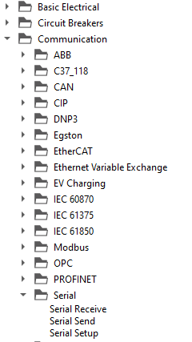
Serial Setup component

Serial Setup
The Setup component is the main component of the Serial library category. This component defines basic UART settings, like baud rate, parity, stop bits, access port, etc.The selected settings will apply for Serial Send and Serial Receive components. For example, if you choose a baud rate of 9600 bps, the Serial Send component will send data at a 9600 bps baud rate, and the Serial Receive component will read data at a baud rate 9600 bps, too. To reach these settings, double click on the Serial Setup component in Schematic Editor (Figure 3).
If Serial protocol is used, there must exist exactly one Serial Setup component for each HIL device that uses Serial protocol.
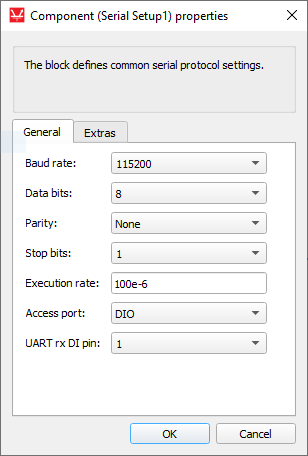
| Description | Values | |
| Baud rate | Number of bits per second. The maximum guaranteed baud rate for the used serial transceiver is 230400 Bit/s. Higher baud rates are permited but data stability is not guaranteed. |
0, 50, 75, 110, 134, 150, 200, 300, 600, 1200, 1800, 2400, 4800, 9600, 19200, 38400, 57600, 115200, 230400, 460800, 921600 |
| Data bits | Number of bits in one character transmitted by UART. |
|
| Parity | Type of parity bit generated after character bits, before stop bit. |
|
| Stop bits | This property value defines how much stop bits will be attached to data frame. |
|
| Access port | This property defines which access port will be used for UART communication. |
|
| UART rx DI pin | This property value defines the digital input pin which will be connected to the UART controller rx port if the selected access port is DIO . This value corresponds to the UART tx port in HIL SCADA, which can be configured using either the HIL SCADA/Model Settings/Digital Outputs menu or by using the Output Settings component in Schematic Editor. |
|
Serial Send
This component is used to send messages from the HIL device to any attached device via UART or DIO. This component block lets you define basic settings and messages to send from the HIL device to any attached device via UART or DIO. When data is sent from multiple Serial Send components (maximum number of Serial Send components is 4), all messages are transmitted over the UART port or through one or more DIO pins. The receiving side must filter incoming messages based on the message header to correctly identify from which component the data originates from. The Serial Send component is presented in Table 1.
| Component | Component dialog | Component properties |
|---|---|---|
 Serial Send |
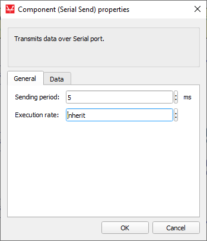 |
|
|
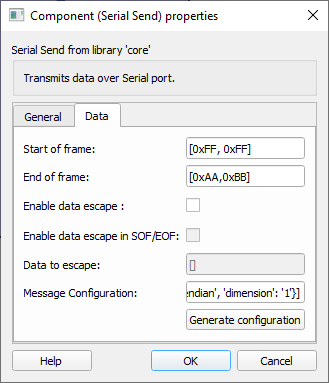 |
Component properties are listed in Table 2.
| Property name | Description | Values |
|---|---|---|
| Sending period | Additional timing delay between two consecutive messages. Input number is in milliseconds. | From 0 to 1000000 (1 million) milliseconds |
| Execution rate | Execution rate of the Signal Processing part of the component (acquiring variables). Value depends on the execution rate of the component that Serial Send is connected to. | |
| Start of frame | Start of frame is sent before the message payload and is used for synchronization. |
|
| End of frame | End of frame is sent after the message payload and is used for synchronization. |
|
| Enable data escape | Enables data link escape in the payload of messages, default value is false. | |
| Enable data escape in SOF/EOF | Enables data link escape in the start and end of messages, default value is false. | |
| Data to escape | Data escape is a term for duplicating certain data. If a message contains some value that needs to be escaped, that value will be duplicated (escaped). For example, if id value 0xEE needs to be escaped, that value will be duplicated to 0xEEEE for every instance of that value in the message. |
|
| Message configuration | Defines the payload of the Send component. For more information on how to configure the payload check the Message Configuration section. |
Message configuration
To change message configuration, use the Generate configuration button in the Data tab.
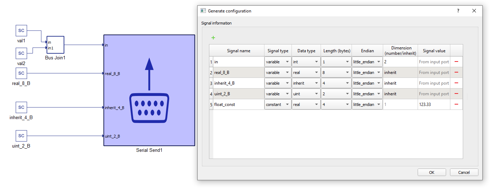
In the configuration menu, you can define custom payload of the data to be sent via UART
In Table 3 there is an overview of the Message configuration menu.
| Field name | Description |
|---|---|
| Signal name | Unique for the variable/constant. |
| Signal type | Defines if the signal is Variable or Constant. If set to Variable, the terminal will be placed on the component, where the signal to be sent should be connected. |
| Data type | For variables it could be inherit (depends on the type of input signal), integer, unsigned integer, or real. For Constants there is additionally an option of sending a String, which will send ASCII values of characters from left to right. |
| Length (bytes) | Options for Length dynamically change when the Data type is chosen. For example, integer and unsigned integer length could be 1, 2, 4, or 8 bytes. Real can be length 4 (Float) or 8 (Double). For Strings, byte length is calculated based on the number of characters. |
| Endian | Select between Little/Big endian byte order. |
| Dimension (number/inherit) | Number of Variables to be sent of the same Data type and Length. This value dictates the dimension of the input terminal. For constants it is always 1. |
| Signal value | For Constants, this defines the value that is going to be sent. |
Message description
Message can be represented in several ways.
The Start and End of frame should be defined as an array using "[]" as shown here. If the Data to escape text box is left empty, the message will not contain a header frame and data will be sent as raw bites.
| Message with only a data part. |
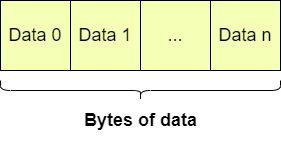 |
| Message that contains a header part (start of frame) and a data part. |
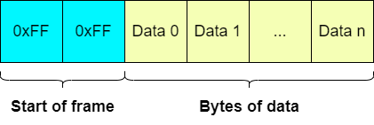 |
| Message that contains an end of frame and a data part. |
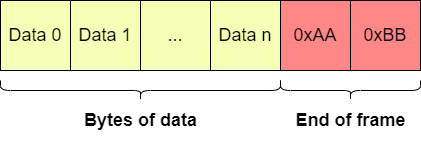 |
| Message that contains a header part (start of frame), an end of frame and a data part. |
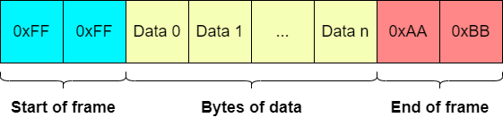 |
| Messages that have data link escape (DLE) enabled. |
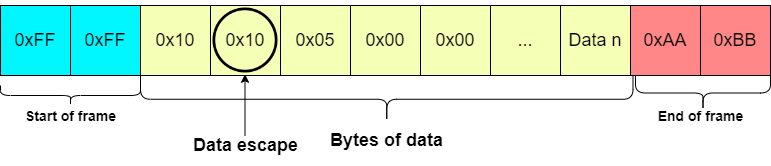 |
Serial Receive
The Serial Receive component is used for reading messages which are sent to the HIL device from any attached device on UART port. The maximum number of Serial Receive components is 1.
This component receives input bytes and converts them into data values. Input data values are represented by variables. After receiving, the variables can be used within the simulation.
The Serial Receive component is presented in Table 5.
| Component | Component dialog | Component properties |
|---|---|---|
 Serial Receive |
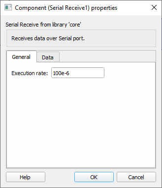 |
|
|
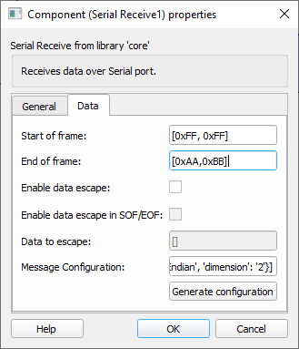 |
Component properties are listed in Table 2.
| Property | Description | Values |
|---|---|---|
| Execution rate | Execution rate of the Signal Processing part of component (acquiring variables). | |
| Start of frame | Start of frame is sent before the message payload and is used for synchronization. |
|
| End of frame | End of frame is sent after the message payload and is used for synchronization. |
|
| Enable data escape | Enables data link escape in the payload of messages, default value is false. | |
| Enable data escape in SOF/EOF | Enables data link escape in the start and end of messages, default value is false. | |
| Data to escape | Data escape is a term for duplicating certain data. If a message contains some value that needs to be escaped, that value will be duplicated (escaped). For example, if id value 0xEE needs to be escaped, that value will be duplicated to 0xEEEE for every instance of that value in the message. |
|
| Message configuration | Defines the payload of the Receive component. For more information on how to configure the payload check the Message Configuration section. |
Message configuration
To change message configuration, use the Generate configuration button in the Data tab.
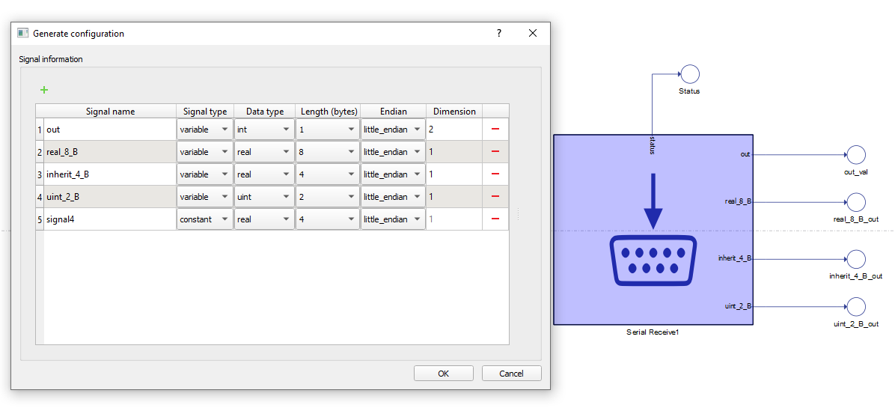
In the configuration menu, you can define a custom payload for the data to be sent via UART.
In Table 7 provides an overview of the Configuration menu.
| Field name | Description |
|---|---|
| Signal name | Unique for the variable/constant. |
| Signal type | Defines if the signal is Variable or Constant. If set to Variable, the terminal will be placed on the component. |
| Data type | Defines if a variable signal input data type is integer, unsigned integer, or real. Constant signal inputs will simply skip a certain number of bytes in the payload. |
| Length (bytes) | Options for Length dynamically change when the Data type is chosen. For example, integer and unsigned integer length could be 1, 2, 4, or 8 bytes. Real can be length 4 (Float) or 8 (Double). For Strings, byte length is calculated based on the number of characters. |
| Endian | Select between Little/Big endian byte order. |
| Dimension (number/inherit) | Number of Variables to be received of the same Data type and Length. This value dictates the dimension of output terminal. For constants it is always 1. For Strings, dimension represents the number of bytes to be skipped when parsing the message. For constants it is always 1. |
As you can see, this component has an additional status port. This status port outputs the number of errors while receiving for two types of errors:
- Framing errors
- Parity errors
If parity is not enabled (parity in Serial Setup component is defined as None), the Status port will always output 0.
If parity is enabled, the Status port will output a count of parity errors and a count of framing errors.
Double clicking on this component will open its component properties window.
VHIL Device Support
Currently Serial components are not supported by VHIL Device.